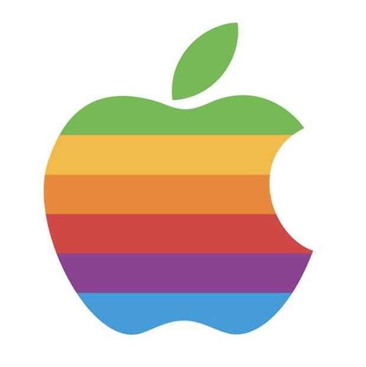

steve jobs의 전 회사 apple
애플(영어: Apple Inc.)은 미국 캘리포니아의 아이폰, 아이패드, 애플 워치, 에어팟, 아이맥, 맥북, 맥 스튜디오와 맥 프로, 홈팟, 비전 프로, 에어태그 등의 하드웨어와 그 제품들의 iOS, iPad OS, Watch OS, mac OS, Vision OS, TV OS 등의 소프트웨어를 설계, 디자인하는 기업이다. 2011년부터 팀 쿡이 CEO를 맡고 있다. 또한 그 소프트웨어에 애플 앱 스토어, 뮤직, 뉴스, 아케이드, tv, 피트니스, 페이, 저장 클라우드 등의 서비스를 제공한다.
애플의 이전 명칭은 애플 컴퓨터 주식회사(영어: Apple Computer, Inc.)였는데, 스티브 잡스가 아이팟, 아이폰을 발표하면서 간단하게 애플이라고 기업 이름을 바꾸었다. 본사는 애플 캠퍼스와 애플 파크에 두고 있으며, 미국 캘리포니아주 쿠퍼티노에 소재하고 있다. 최고경영자는 팀 쿡이다.
